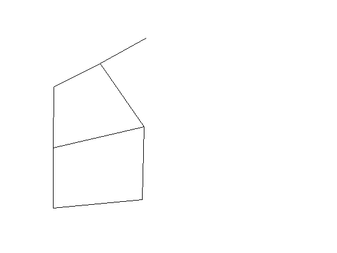
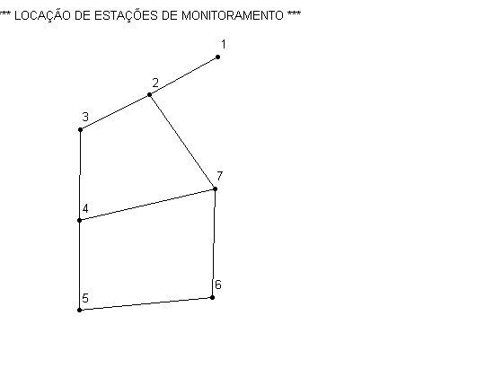
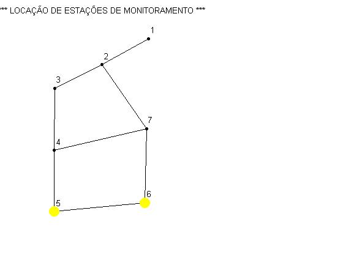
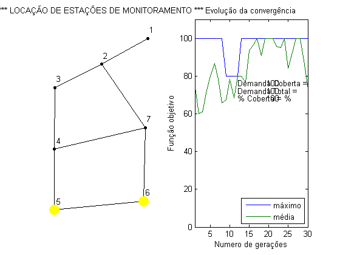

Rotina PRINCIPAL
Determinação da localização ótima de estações de monitoramento de qualidade de água DISSERTAÇÂO DE MESTRADO Aluno: Roberto Suse Orientador: Prof. Dr. Edevar Luvizotto Junior Ultima atualização: Novembro/2013
Contents
Limpeza de tela e de memória
clc; %Limpa tela clear all; %Limpa variáveis
Dados de entrada
Nome dos arquivos de dadps
Redefile = 'exemplo1.inp'; %Nome do arquivo de dados .inp do Epanet Coordfile = 'exemplo1.dat'; %Arquivo com coordenada dos nos extraido do inp
Critério de cobertura e numero de estações a locar
criterio = 0.5; %criterio de cobertura num_est = 2; %Numero de estações de montoramento (deve ser par)
Parametros do AG
NGen = 30; %numero de gerações ind_pop = 6; %Numero de individuos na população prob_mut = 0.07; %Probabilidade de mutação
Chamada ao EPANET Toolkit
epanetloadfile(Redefile); %Abre arquivo do Epanet [Q] = getdata('EN_FLOW'); %Matriz da vazão Periodo Extensivo Per = 1; %Periodo Desejado
Warning: The data type 'FcnPtr' used by function ENepanet does not exist. File 'G:\TFC_HUGO\Progma_Matlab\Epanet_Matlab_Toolkit\exemplo1.inp' opened successfully.
Obtem informações da rede analizada
NoCont = getdata('EN_NODECOUNT'); %obtem numero de nós da rede LinkCont = getdata('EN_LINKCOUNT'); %Obtem numero mde elemnetos da rede ND = NoCont; %Indica a dimensao da matriz no. nos x no. de nos MQ = zeros(ND,ND); %Gera matriz de vazão nula DM=getdata('EN_BASEDEMAND'); %Obtem vetor de demandas e armazena em DM
Informações dos nós obtidas do arquivo de entrada INP do Epanet
for i=1:ND Nix(i) = i; %Gera um vetor de indices dos nós [errorcode, N] = calllib('epanet2', 'ENgetnodeid',i,''); Nid(i) = str2num(N); %Gera um vetor de ididentificação id dos nós end
Informações relacionads aos tubos obtidas do arquivo INP
for i=1:LinkCont [errorcode, N1,N2] = calllib('epanet2', 'ENgetlinknodes', i,0,0); VN1i(i)= N1; VN2i(i) = N2; %Vetores com indice dos nós inicio e fim [errorcode, Nu] = calllib('epanet2', 'ENgetlinkid',i,''); VNu(i) = str2num(Nu); %Vetor com Numero do elemento [errorcode, Na] = calllib('epanet2','ENgetnodeid',N1, ''); VN1(i) = str2num(Na); %Vetor com numero do nó inicio [errorcode, Nb] = calllib('epanet2','ENgetnodeid',N2, ''); VN2(i) = str2num(Nb); %Vetor com numero do nó jusante [errorcode, N1i] = calllib('epanet2', 'ENgetnodeindex',num2str(VN1(i)),0); [errorcode, N2i] = calllib('epanet2', 'ENgetnodeindex',num2str(VN2(i)),0); N11(i) = str2num(N1i); N22(i) = str2num(N2i); end
Le arquivo de coordenada dos nós da rede do arquivo DAT contem a parte referente as coordenadas do arquivo Inp do Epanet
[labels,x,y] = readColData(Coordfile,3,1);
% Obtem os valores extremos das coordenadas lidas
[xmax,ind_xmax] = max(y(:,1));
[xmin,ind_xmin] = min(y(:,1));
[ymax,ind_ymax] = max(y(:,2));
[ymin,ind_ymin] = min(y(:,2));
Define coordenadas da janela para o desenho da rede
xmin = xmin-abs(xmax-xmin)*0.1; xmax = xmax+abs(xmax-xmin)*0.1; ymin = ymin-abs(ymax-ymin)*0.1; ymax = ymax+abs(ymax-ymin)*0.1;
loop para desenho do tubos e alocação da matriz de vazões
subplot(1, 2, 1); axis([xmin xmax ymin ymax]) axis off % Faz o Desenho da rede hold on for i=1:LinkCont Naa = find(Nid==N11(i)); k = 1; while (N11(i) ~= x(k)) k = k+1; end x1p = y(k,1); y1p =y(k,2); Nbb = find(Nid==N22(i)); k = 1; while (N22(i) ~= x(k)) k = k+1; end x2p = y(k,1); y2p =y(k,2); line([x1p x2p], [y1p,y2p],'Color',[.0 .0 .0]); %Desenha as tubulações if Q(Per,i) > 0.0 MQ(Nbb,Naa)= abs(Q(Per,i)); else MQ(Naa,Nbb)= abs(Q(Per,i)); end end;
fecha o Epanet tool kit
epanetclose();
subplot(1, 2, 1); axis([xmin xmax ymin ymax]) axis off % Faz o Desenho da rede hold on % Redesenha nos e coloca o titulo principal plot(y(:,1),y(:,2),'o','LineWidth',1,... 'MarkerEdgeColor','k',... 'MarkerFaceColor','k',... 'MarkerSize',4); delx = (xmax-xmin)*0.02; dely = (ymax-ymin)*0.04; text(delx+y(:,1),dely+y(:,2),num2str(Nid(:)),... 'HorizontalAlignment','left') title('*** LOCAÇÃO DE ESTAÇÕES DE MONITORAMENTO ***')
Impressão na tela dos dados de entrada
fprintf('\n================ Relatorío ============================\n'); fprintf('= Arquivo: %s \n', Redefile); fprintf('= Numero total de nós: %d \n',ND); fprintf('= Numero total de elementos: %d \n', LinkCont); fprintf('= Numero de estações a alocar: %d \n',num_est); fprintf('= Porcentagem de cobertura: %d \n',criterio*100); fprintf('======================================================= \n');
================ Relatorío ============================ = Arquivo: exemplo1.inp = Numero total de nós: 7 = Numero total de elementos: 8 = Numero de estações a alocar: 2 = Porcentagem de cobertura: 50 =======================================================
INICIO DO PROCEDIMENTO
Vetor das demandas
prt = DM % Vetor auxiliar utilizado para impressão do vetor das demandas % Obtem vetor de demandas nodais na forma propriada DEM = DM'; %vetor demandas em coluna;
prt =
0 15 30 10 25 20 0
Obtem a matriz de fração de água
[f] = M_FRAC_AGUA (ND, MQ); %Gera matriz da fração de água clear prt; %Limpa vetro auxiliar prt = f %Imprime matriz de fração de água
prt =
1.0000 1.0000 0.8949 1.0000 0.7082 1.0000 0
0 1.0000 0.8949 0 0.7082 0 0
0 0 1.0000 0 0.7913 0 0
0 0 0.1051 1.0000 0 1.0000 0
0 0 0 0 1.0000 0 0
0 0 0 0 0.2087 1.0000 0
1.0000 0 0 0 0 0 1.0000
Obtem a Matriz de cobertura
[f] = MAT_COBERTURA (ND,f,criterio); %Gera matriz de cobertura global clear prt; %Limpa vetro auxiliar prt = f %Imprime matriz de cobertura
prt =
1 1 1 1 1 1 0
0 1 1 0 1 0 0
0 0 1 0 1 0 0
0 0 0 1 0 1 0
0 0 0 0 1 0 0
0 0 0 0 0 1 0
1 0 0 0 0 0 1
Gerq População inicial
[POP] = POP_INICIAL(ind_pop, num_est,ND);%Gera população inicial aleatória %Limpa vetro auxiliar for i=1:ind_pop clear prt prt = POP(i).cromossomo %Mostra individuos da população inicial end
prt =
5 4
prt =
3 5
prt =
6 5
prt =
5 7
prt =
4 1
prt =
1 3
Calcula a função Objetivo para todos os individuos da população inicial
[vajuste,POP] = F_OBJETIVO (ind_pop, f, POP, ND,num_est,DEM); %Calcula função objetivo da pop. clear prt; %Limpa vetro auxiliar prt = vajuste %Imprime valor da função objetivo da população inicial
prt =
80 70 100 70 10 45
Prepara para entrar no Laco do AG
maxmax = 0; new_gera = 0; %zera contador de gerações disp('Geração Melhor Ajuste Media Geração Melhor Individuo')
Geração Melhor Ajuste Media Geração Melhor Individuo
Inicio do laço das gerações do AG
while new_gera < NGen new_gera = new_gera+1; gerac(new_gera) = new_gera; %Armazena vetor para plotagem [POP] = AG (num_est, ND, ind_pop, POP, prob_mut); %gera nova população [vajuste,POP] = F_OBJETIVO (ind_pop, f, POP, ND,num_est,DEM); %Avalia população % -------- Retem dados para impressão e graficos ------------------------ media(new_gera) = mean(vajuste); %Media do vetor auxiliar das funções objetivos [maxi,ind_max] = max(vajuste); %Localiza o maximo e o indice da melhor maximo(new_gera) = maxi; %Valor do melhor indivíduo if maxmax < maxi maxmax = maxi; Melhor_de_todos = POP(ind_max).cromossomo; end Melhor_individuo = POP(ind_max).cromossomo; %Cromossomo da melhor solução fprintf(' %d %15.4f %14.4f ',new_gera, POP(ind_max).ajuste, media(new_gera)); for i=1:num_est-1 fprintf(' %d ',Nid(Melhor_individuo(i))); end fprintf(' %d \n',Nid(Melhor_individuo(num_est))); end % Fim do processamento das gerações
1 100.0000 75.0000 6 5 2 100.0000 60.0000 6 5 3 100.0000 60.8333 6 5 4 100.0000 72.5000 6 5 5 100.0000 80.0000 6 5 6 100.0000 86.6667 6 5 7 100.0000 78.3333 6 5 8 100.0000 65.8333 6 5 9 80.0000 67.5000 7 5 10 80.0000 78.3333 7 5 11 80.0000 68.3333 7 5 12 80.0000 80.0000 7 5 13 100.0000 80.0000 6 5 14 100.0000 76.6667 6 5 15 100.0000 93.3333 6 5 16 100.0000 96.6667 6 5 17 100.0000 100.0000 6 5 18 100.0000 90.8333 6 5 19 100.0000 100.0000 6 5 20 100.0000 100.0000 6 5 21 100.0000 100.0000 6 5 22 100.0000 95.8333 6 5 23 100.0000 95.0000 6 5 24 100.0000 100.0000 6 5 25 100.0000 84.1667 6 5 26 100.0000 92.5000 6 5 27 100.0000 100.0000 6 5 28 100.0000 100.0000 6 5 29 100.0000 88.3333 6 5 30 100.0000 73.3333 6 5
Pega Indice do melhor individuo para pintar no gráfico
for i=1:num_est k = 1; while (Nid(Melhor_de_todos(i)) ~= x(k)) k = k+1; end xpl(i) = y(k,1); ypl(i) = y(k,2); end
Desenha solução encontrada
subplot(1, 2, 1); hold on plot(xpl,ypl,'o','LineWidth',1,... 'MarkerEdgeColor','y',... 'MarkerFaceColor','y',... 'MarkerSize',12)
%Plota grafico dos ajustes do melhor indiciduo e da média da população subplot(1, 2, 2); plot(gerac,maximo,gerac,media); axis([1 NGen 0 maxmax*1.1]) title('Evolução da convergência'); text(NGen*0.4,maxmax*0.76, 'Demanda Coberta =','FontSize',10); text(NGen*0.65,maxmax*0.76, int2str(maxmax),'FontSize',10); text(NGen*0.4,maxmax*0.72, 'Demanda Total =','FontSize',10); text(NGen*0.65,maxmax*0.72, int2str(sum(DM)),'FontSize',10); text(NGen*0.4,maxmax*0.68,'% Coberta =','FontSize',10); text(NGen*0.65,maxmax*0.68,strcat(int2str(round(maxmax/sum(DM)*100)),' %'),'FontSize',10); lgd=legend('máximo','média'); set(lgd,'Location','SouthEast'); xlabel('Numero de gerações'); ylabel('Função objetivo');
%Apresenta os nós cobertos por cada uma das estações encontradas fprintf(' \n'); fprintf(' \n '); fprintf('============================================ \n '); fprintf('EST. NOS COBERTOS \n'); fprintf('============================================ \n '); for i=1:num_est fprintf('%4d', Nid(Melhor_de_todos(i))); for L = 1:1:ND if f(L, Nid(Melhor_de_todos(i))) == 1 fprintf('%4d', L) end end fprintf(' \n '); end fprintf('============================================ \n ');
============================================
EST. NOS COBERTOS
============================================
6 1 4 6
5 1 2 3 5
============================================